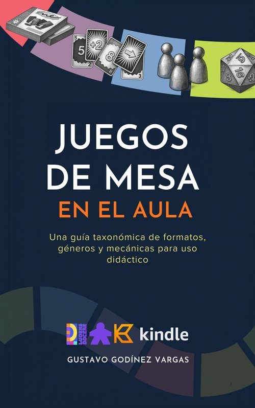

Ludens Docere · Kindle
Juegos de mesa en el aula
Una guía taxonómica de formatos, géneros y mecánicas para uso didáctico
Para docentes que quieren llevar los juegos de mesa a clase con intención: cómo reconocer los formatos, géneros y mecánicas de un juego y elegir el adecuado para cada propósito de aprendizaje.